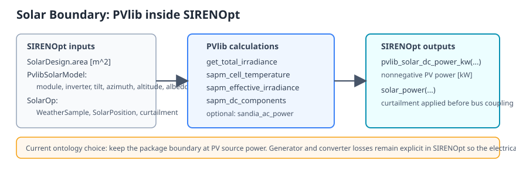
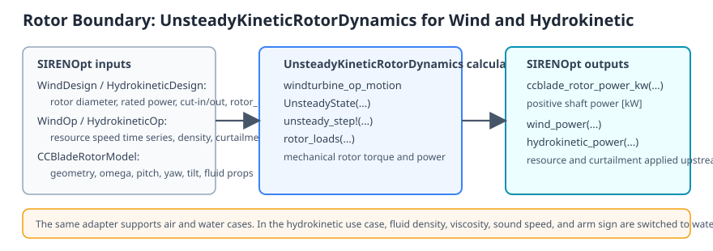
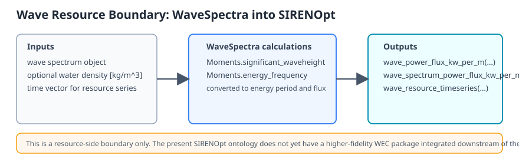
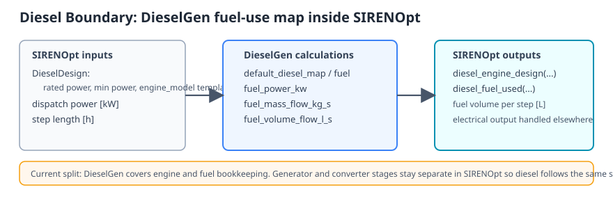
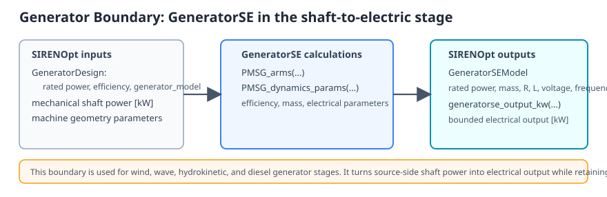
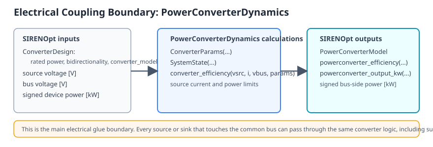
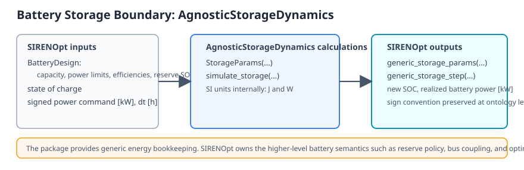
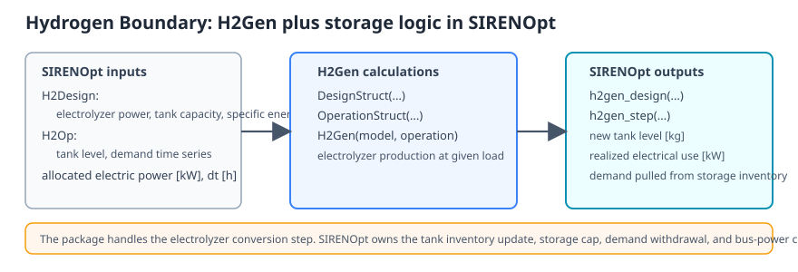
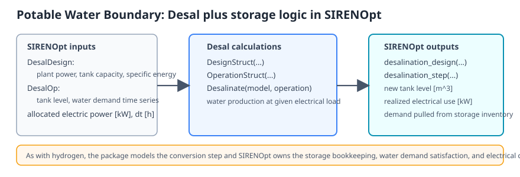
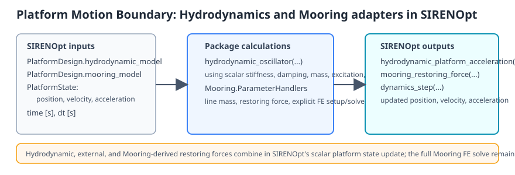

Theory
SIRENOpt treats the hybrid plant as a coupled dynamic system. At each time step, resource models produce available energy, conversion subsystems transform that energy into electrical or stored products, controllers choose setpoints, and the platform model updates motion-relevant state from aggregate forces and mass.
The ontology boundary is the important design object. Each subsystem should expose inputs and outputs that are physical, typed where practical, and stable under fidelity upgrades. For example, a wind or hydrokinetic rotor model should consume inflow and operating state and return shaft power/loads; a generator model should consume shaft state and return electrical power/losses; a converter should expose voltage, current, and efficiency; storage should expose state of charge, spill, and unmet demand.
Optimization is built around differentiable Julia functions. Smooth approximations are used where hard active-set changes would otherwise make gradients unreliable. The solver examples use SNOW, IPOPT, optional SNOPT, ForwardDiff, and OptimizationParameters to support control co-design experiments with variable scaling and variable enable/disable workflows.
Package Boundaries
The diagrams below summarize the current package I/O boundaries used by SIRENOpt. They are checked in as SVG so they can be edited directly in git or opened in any vector editor.
Solar: PVlib
For the current solar package integration, PVlib sits at the resource-to-array boundary. WeatherSample plus solar position determine plane-of-array irradiance, cell temperature, effective irradiance, and PV DC output. SIRENOpt then keeps generator and converter losses explicit at the ontology level so electrical coupling remains consistent with wind, wave, hydrokinetic, diesel, storage, hydrogen, and desalination subsystems. No implicit solve is used in the current PV path.

Wind and Hydrokinetic Rotor: UnsteadyKineticRotorDynamics
UnsteadyKineticRotorDynamics is used at the rotor boundary for both wind and marine hydrokinetic cases. SIRENOpt passes the resource speed, rotor operating state, and fluid properties to the package and receives positive shaft power in kW. The downstream generator and converter stages remain explicit in SIRENOpt.

Wave Resource: WaveSpectra
WaveSpectra currently supplies the resource-side wave boundary only. The package produces significant wave height and energy period information, which SIRENOpt turns into wave power flux in kW/m. A higher-fidelity downstream WEC package has not yet been integrated at this stage.

Diesel Engine and Fuel: DieselGen
DieselGen currently handles the diesel engine map and fuel consumption bookkeeping. SIRENOpt builds a package design object from DieselDesign, evaluates fuel use for a dispatched power level, and keeps the generator and converter stages separate so the diesel path follows the same bus-coupling pattern as the renewable sources.

Generator Stage: GeneratorSE
GeneratorSE is used as the shaft-to-electric boundary for wind, wave, hydrokinetic, and diesel generator stages. SIRENOpt uses the package to derive machine efficiency and sizing metadata, then evaluates bounded electrical output in kW at the ontology level.

Electrical Coupling: PowerConverterDynamics
PowerConverterDynamics provides the package-backed converter efficiency model for signed bus coupling. SIRENOpt wraps the package in a uniform source-to-bus and load-to-bus interface so every subsystem can use the same electrical boundary conventions.

Battery Storage: AgnosticStorageDynamics
AgnosticStorageDynamics is the current energy-state package for the battery subsystem. SIRENOpt converts the battery design into the package's SI-unit parameterization, simulates one storage step, and maps the result back to state of charge and realized battery power in kW.

Hydrogen Production and Storage: H2Gen
H2Gen models the electrolyzer conversion step. SIRENOpt owns the tank inventory, power allocation, and external demand satisfaction. This keeps the package boundary focused on conversion performance while the ontology retains the system-level storage coupling.

Desalination and Water Storage: Desal
Desal is integrated with the same pattern as H2Gen: the package models the conversion step, while SIRENOpt owns the storage inventory, power allocation, and demand withdrawal. This keeps the electrical and mass-balance coupling explicit at the ontology level.

Platform Motion and Mooring: Hydrodynamics, Mooring
Hydrodynamics remains available as a scalar placeholder boundary. The present adapter wraps a 1-DOF oscillator-like call and returns a platform acceleration that SIRENOpt advances explicitly. It is useful for differentiable plumbing tests and low-order sensitivity work.
The Hydrodynamics 6-DOF adapter is the current force-based platform motion path. SIRENOpt stores the hydrodynamic model on PlatformDesign.hydrodynamic_model, initializes a PlatformState6DOF, and passes external wrenches, wave components, velocity history, direction-selection mode, and optional coefficient diagnostic callbacks into the Hydrodynamics Cummins-style time-stepper. This keeps BEM hydrodynamic state, radiation memory, added mass, and wave excitation in the hydrodynamics package while the system-level energy, water, storage, and bus states remain in SIRENOpt.
Mooring is integrated as the platform station-keeping boundary. SIRENOpt builds Mooring.jl parameter handlers from SI point, segment, material, and line definitions, exposes Mooring.jl line setup and quasi-static solve calls explicitly, and uses a Mooring-derived linearized restoring force and line mass inside the scalar platform dynamics path. The full finite-element solve remains an explicit package call; time-step dynamics use the lightweight force contribution so hydrodynamic, external, and mooring forces combine at the ontology level with clear units and sign convention.
